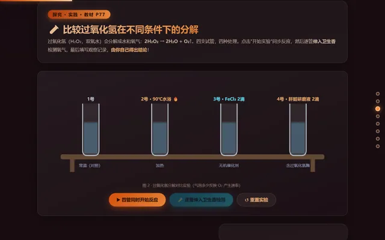

WorkBuddy 版 v2.0WorkBuddy 版 · v2.0打开此版本 ↗
本站公开 / 归档 2026-10-28 · 平台同步 2026-11-02用四管实验与闯关比喻解释活化能降低。
本站导入日期；编号用于区分讲授方案，不代表全面替代原版本版人数（估算） — 人 · 打开 — 次
功能、讲授思路与更新记录
- 过氧化氢四管实验和检测记录
- 无催化、Fe³⁺、酶的能量路径比较
- 酶本质的科学史档案与练习
讲授思路：先做条件对照，再用能量曲线解释催化，最后讨论酶的本质。
- 新增 WorkBuddy 讲授方案，保留原版及历史版本。
- 接入平台导航、打开次数、主题评论与版本记录。
- 同步本机当前课堂内容及姓名奖状，保留原版本统计键。
本版中的闯关、工厂等是教学比喻；动画为简化示意。题目来源和年份请以原始试卷核验为准。